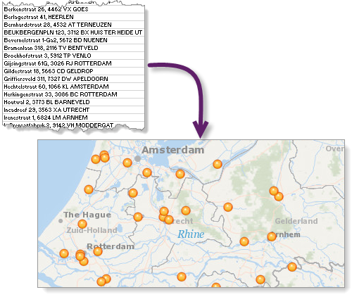
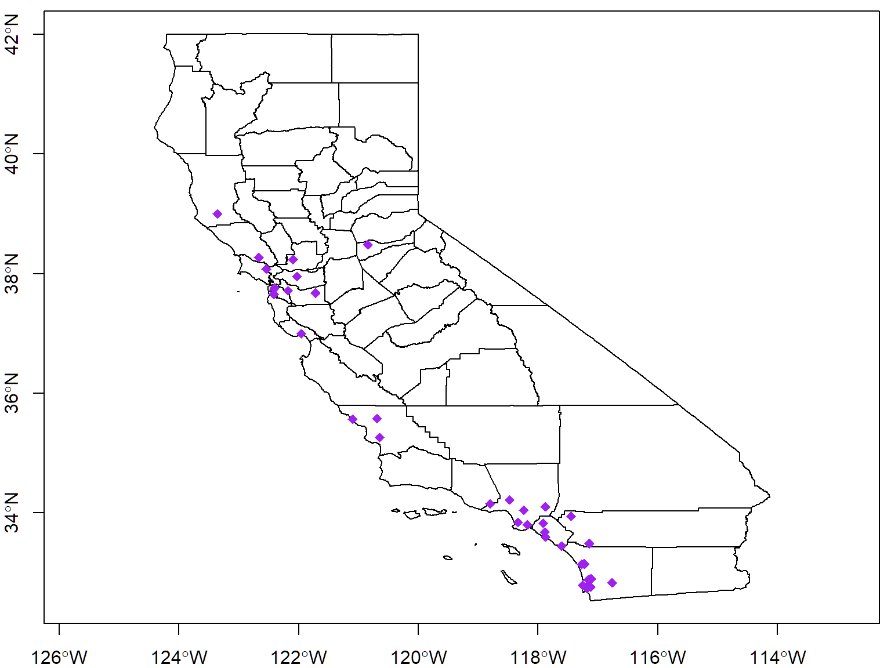
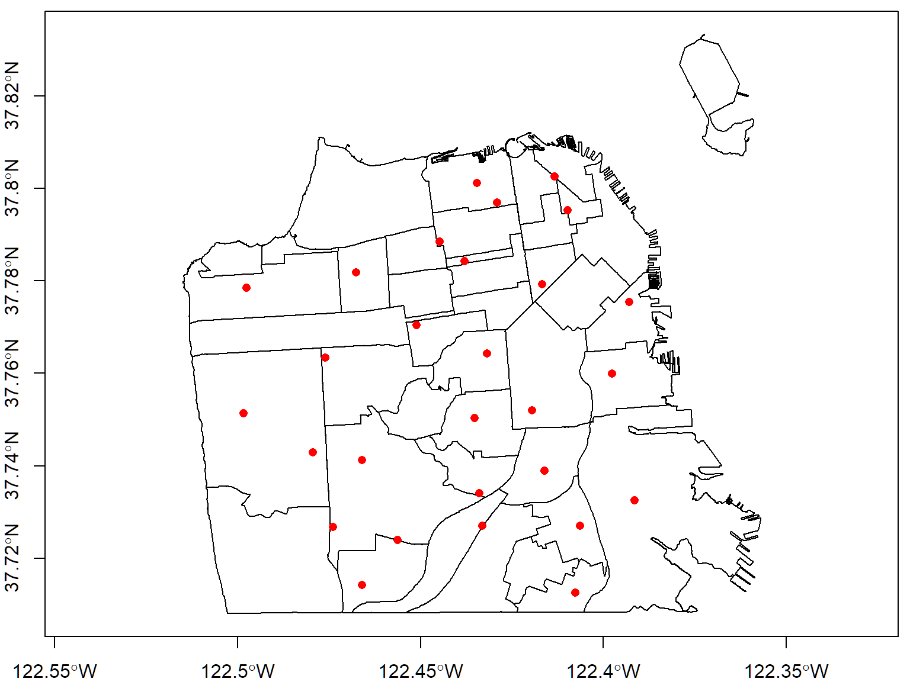

Geocoding
Geocoding is the process of turning an address or place name into latitude-longitude coordinates.

Free services generally limit # addresses per search, # queries per second, and/or # queries per day
Paid and freemium API services usually require getting a key, agreeing to the Terms of Service, and linking it to a billing account (credit card)
One-time need plus modest number of address queries?
Use a browser interface
If you need an API, look at:
Billing Enabled required! As of mid-2018, Google requires you to link your API key to a billing account (e.g., connected to a credit card). According to them, this helps ensure actual people are getting keys, and provides them a way to bill customers who use Google API services heavily.
The documentation states you will automatically get $200/month worth of API services (enough for about 40,000 Gecode queries, minus other services you use). You may also get a $300 credit for the first year.
This highlights the importance of protecting your API key (see below).
Instructions adapted from Getting a Geocoding API Key
Log into Google with the account you want to use
Go to the Google Cloud Platform Console
From the Project drop-down menu, select or create the project for which you want to add an API key.
From the Navigation Menu, select API and Services >> Library. Search for “Geocoding API” and enable it for the project.
From the Navigation menu, select APIs & Services >> Credentials.
On the Credentials page, click Create credentials >> API key. Your key is created and displayed immediately.
On the same page, click Restrictions >> API Restrictions. Restrict your API to just Geocoding API. Now if someone steals it, at least they can only use it for geocoding. Of course if you want to use the same key for downloading background tiles or other services, enable those APIs as well.
For additional info, see the Google Geocoding API Documentation
API keys are like passwords that provide access to services that you could be billed for. However unlike passwords, API keys are often transmitted unencrypted from web pages and scripts like R or Python. Careless developers will even hardcode their API key in their HTML code or R script, making it very easy to discover.
There are two things you can do to protect your API key.
When you create a Google API key, you can limit it to specific APIs (e.g., only good for downloading background tiles), and/or application (e.g. only works from a specific website with a specific IP address).
Some services (e.g., ESRI Geocoding Service, see below) also impose expiration dates on API keys.
Although it’s very convenient to simply paste your API in your code, anyone who sees your script will be able to see and potentially use your key.
A better technique is to store your key in a file somewhere where it won’t be accidentally shared. Then you import it into your script. It is still unencrypted in memory, so this is still not very secure, but at least it won’t be accidentially shared.
The following commands will read the first line of a text file like the one shown below, and save the results to a variable.
api_fn <- "~/my-google-geocode-api.txt" ## File located in 'home' folder (My Documents)
f <- file(api_fn, open = "rt") ## create a (file) connection object
mykey_google <- readLines(f, n=1) ## n=1 read first line only
close(f)
mykey_google## [1] "R5p7S006$7K#v3V7UYncAq^lUVxBN7@-`c5p@Cg'#jFG:3V/*G'9fYk*ktj~?1*zz,B.YcD?rx8ABZz80"You can also save your API key as a *.RData file with the save() function, the same way you would save any R object, and bring it back into R with load().
For additional tips, see also: API Key Best Practices.
ggmap is a popular package that people use for:
ggmap works with the following online geocoding services:
Use ggmap version 2.7.900 or later, it has better features for protecting your API keys. You can check which version you have by running:
If the version on CRAN is not current, you can install from Github.
As always, if you get error messages about a package already in use, restart R and try again.
Register your API key with ggmap::register_google(). This instructs ggmap to ‘remember’ your key and transmit it whenever needed for calls to the geocoding service.
You’re now ready to use the geocode() function. Start with something simple.
## [1] "Source : https://maps.googleapis.com/maps/api/geocode/json?address=San%20Francisco%2C%20CA&key=xxx-_jxqSpkCM_4TVw"## lon lat
## 1 -122.4194 37.77493If you have a Google API Key, try it with i) a place name, ii) an address, and iii) a landmark.
The Google Geocode API offers different levels of metadata with the geocoding results, which you can control by setting the output argument.
| output= | Returns |
|---|---|
| “latlon” | lat & long |
| “latlona” | lat, long, & address |
| “more” | lat, long, address, & type of result (e.g., approximate, rooftop) |
Compare the following:
## lon lat
## 1 -122.4206 37.75483
## address
## 1 1125 valencia st., 4th floor,, san francisco, ca 94110, united states## lon lat type loctype
## 1 -122.4206 37.75483 establishment geometric_center
## address
## 1 1125 valencia st., 4th floor,, san francisco, ca 94110, united states
## north south east west locality
## 1 37.75618 37.75348 -122.4193 -122.422 San Francisco
## administrative_area_level_1 country postal_code
## 1 California United States 94110geocode() is vectorized, so you can pass it multiple locations and it will return a data frame with the matched results. If you want to add the lat-lon columns in the data frame (so you don’t have to merge them later) use ggmap::mutate_geocode().
First we import the ca_breweries.csv file.
## [1] TRUEFor now we’ll just work with the first 40 records.
## Name Address
## 1 10 Mile Brewing Company 1136 E Willow St
## 2 101 North Brewing 1304 Scott St Suite D
## 3 14 Cannons 31125 Via Colinas Suite 907
## 4 21st Amendment Brewery - San Leandro 2010 Williams St
## 5 2Kids Brewing Company 8680 Miralani Drive
## 6 32 North Brewing Company 8655 Production Ave Suite A
## City State Phone Type
## 1 Signal Hill CA (562) 612-1255 Brewery
## 2 Petaluma CA (707) 778-8384 Brewery
## 3 Westlake Village CA (818) 652-6971 Brewery
## 4 San Leandro CA Brewery
## 5 San Diego CA (858) 480-5437 Brewery
## 6 Sand Diego CA 619-363-2622 BreweryIt looks like the addresses are split across the ‘Address’, ‘City’, and ‘State’ columns. Let’s combine those and add them to the data frame as a new column.
## [1] "1136 E Willow St, Signal Hill, CA"
## [2] "1304 Scott St Suite D, Petaluma, CA"
## [3] "31125 Via Colinas Suite 907, Westlake Village, CA"
## [4] "2010 Williams St, San Leandro, CA"
## [5] "8680 Miralani Drive, San Diego, CA"
## [6] "8655 Production Ave Suite A, Sand Diego, CA"
## [7] "1795 Hancock Street, San Diego, CA"
## [8] "821 Cornwall St, Cambria, CA"
## [9] "2878 Columbia Street, Torrance, CA"
## [10] "435 Fernleaf, Corona Del Mar, CA"
## [11] "1795 Hancock St., Suite P1, San Diego, CA"
## [12] "28822 Old Town Front St., Temecula, CA"
## [13] "975 Detroit Ave, Concord, CA"
## [14] "9368 Cabot Drive, San Diego, CA"
## [15] "692 Arrow Grand Cir, Covina, CA"
## [16] "2351 Alpine Blvd., Alpine, CA"
## [17] "2402 Research Drive, Livermore, CA"
## [18] "9659 Main St, Plymouth, CA"
## [19] "4150 Mission Blvd #208, San Diego, CA"
## [20] "336 South Anaheim Boulevard , Anaheim, CA"
## [21] "1705 Mariposa St., San Francisco, CA"
## [22] "17700 Highway 253, Boonville, CA"
## [23] "216 S Alameda St, Los Angeles, CA"
## [24] "3101 Busch Dr., Fairfield, CA"
## [25] "15800 Roscoe Blvd, Van Nuys, CA"
## [26] "5621 Palmer Way, Carlsbad, CA"
## [27] "7123 Arlington Ave., Suite - A, Riverside, CA"
## [28] "415 Grande Ave, South San Francisco, CA"
## [29] "919 Calle Amanecer Suite A, San Clemente, CA"
## [30] "3416 Adams Ave., San Diego, CA"
## [31] "2330 La Mirada Dr. Suite 300, Vista, CA"
## [32] "401-B Bel Marin Keys Blvd, Novato, CA"
## [33] "5401 Linda Vista Road, Suite 406, San Diego, CA"
## [34] "10051 Old Grove Road Suite B, San Diego, CA"
## [35] "950 Orcutt Rd, San Luis Obispo, CA"
## [36] "1525 Cortland Ave, San Francisco, CA"
## [37] "3535 N. Main St., Soquel, CA"
## [38] "2957 Randolph Ave, Unit B, Costa Mesa, CA"
## [39] "2575 Pioneer Ave #104, Vista, CA"
## [40] "3055 Limestone Way, Paso Robles, CA"Now we can run the geocode service. In order to add the coordinate columns to the existing data frame, we’ll use mutate_geocode() and save the result as a new data frame.
mutate_geocode() requires the locations be saved in a column in the datqa frame, so we add that first.
cabrew_df$address_city_state <- fulladdr
cabrew_gc_df <- mutate_geocode(cabrew_df, address_city_state, output="latlona")
head(cabrew_gc_df)If there are any addresses that did not yield a match, the coordinate columns will come back as NA. we can investigate them using an attribute filter.
## [1] Name Address City
## [4] State Phone Type
## [7] address_city_state lon lat
## [10] address
## <0 rows> (or 0-length row.names)Plot the locations that geocoded successfully.
## Create a spatial points object
cabrew_sp_ll <- sp::SpatialPoints(cabrew_gc_df[!is.na(cabrew_gc_df$lon),c("lon","lat")], proj4string = CRS("+init=epsg:4326"))
## Transform county boundaries boundaries into lat-long
ca_counties_ll <- sp::spTransform(ca_counties_alb, CRS("+init=epsg:4326"))
# Plot
plot(ca_counties_ll, axes=T, asp=1)
plot(cabrew_sp_ll, pch=18, col="purple", cex=1.2, add=TRUE)
Other Things You Can Do with Geocode
revgeocode() performs a reverse geocode
If you have a Developer or an Organizational account with ESRI, you can use their Geocding API in R.
You can sign up for an account in the ArcGIS Developer Program for free. A free account will give you 50 credits per month. One geocode query consumes 0.04 credits, so that’s enough for ~1250 geocode queries / month.
ESRI calls an API key tokens. To get a token, you need to first create a Project.
After you log-in into the Dashboard, click on ‘Applications’ then ‘New Application’. Fill in the short form that appears. ESRI requires you to enter at least one tag.
When your project is created, you’ll see your Client ID and Client Secret (long strings). Copy those. You’ll also get a Temporary Token, valid for about two hours. If two hours is long enough for you to do your work, you’re good to go and can skip the next step.
For detailed instructions, see ESRI’s API documentation
If you need a token that is valid for more than two hours (the maximum is two weeks), copy-paste the following URL into notepad, then insert your Client ID and Client Scret strings into the placeholders.
Replace your-client-id-here and your-client-secret-here with your ‘Client ID’ and ‘Client Secret’ string. Replace num-minutes-to-expire with the number of minutes before the token should expire. Note the maximum is 20160 (two weeks).
After you’ve edited the URL, copy it into your browser’s address bar and hit Enter. After a few seconds you’ll see a JSON object appear with your new token. It will look something like:
The token is the long string between the quotes. Copy-paste it to your script, or better yet follow best practices and save it in an external file and read it into R programmatically (see above) .
token_fn <- "~/My Keys/esri-token.txt"
f <- file(token_fn, open = "rt")
my_esri_token <- readLines(f, n=1)
close(f)There isn’t a R package for using the ESRI Geocoding Service, but thanks to Claudia Engel and others there’s a script with two functions for geocoding with ESRI. To load these functions into R, source the script:
You should now have two additional functions you can use, geocode_one() and geocode_many().
Like other geocoders, ESRI WGS can take place name or an address.
## lon lat score locName status matchAddr side addressType
## 1 -122.413 37.78679 89.66 World M Millennium L POI## lon lat score locName status
## 1 -122.1619 37.44418 100 World M
## matchAddr side addressType
## 1 547 Emerson St, Palo Alto, California, 94301 R PointAddressLet’s look at the arguments of the geocode_many() function.
## function (id, street, city, state, zip, token)
## NULLgeocode_many() usage
Step 1. Load the csv file
## [1] TRUE## 'data.frame': 28 obs. of 6 variables:
## $ branch : chr "ANZA" "BAYVIEW / LINDA BROOKS-BURTON" "BERNAL HEIGHTS" "CHINATOWN / HIM MARK LAI" ...
## $ phone.num: chr " (415) 355-5717" " (415) 355-5757" " (415) 355-2810" " (415) 355-2888" ...
## $ address : chr " 550 37th Ave." " 5075 Third St." " 500 Cortland Ave." " 1135 Powell St." ...
## $ city : chr " San Francisco" " San Francisco" " San Francisco" " San Francisco" ...
## $ state : chr " CA" " CA" " CA" " CA" ...
## $ zip : int 94121 94124 94110 94108 94114 94112 94131 94123 94112 94102 ...Step 2: Inspect the columns
## branch phone.num
## 1 ANZA (415) 355-5717
## 2 BAYVIEW / LINDA BROOKS-BURTON (415) 355-5757
## 3 BERNAL HEIGHTS (415) 355-2810
## 4 CHINATOWN / HIM MARK LAI (415) 355-2888
## 5 EUREKA VALLEY / HARVEY MILK MEMORIAL (415) 355-5616
## 6 EXCELSIOR (415) 355-2868
## address city state zip
## 1 550 37th Ave. San Francisco CA 94121
## 2 5075 Third St. San Francisco CA 94124
## 3 500 Cortland Ave. San Francisco CA 94110
## 4 1135 Powell St. San Francisco CA 94108
## 5 1 Jose Sarria Court San Francisco CA 94114
## 6 4400 Mission St. San Francisco CA 94112The address, city, and zip columns look pretty good, but the data frame doesn’t have an ‘ID’ column which geocode_many() requires. Let’s add that now.
Note how we made ID capitalized. That’s because the ID column in the results is capitalized, so this will make it easier to merge the new columns with the original.
Now we’re ready to geocode:
sflib_gc_esri <- geocode_many(sflib_df$ID, sflib_df$address, sflib_df$city, sflib_df$state, sflib_df$zip, my_esri_token)
head(sflib_gc_esri)## ID lon lat score locName status
## 1 2 -122.3914 37.73254 100 World M
## 2 4 -122.4098 37.79525 100 World M
## 3 1 -122.4975 37.77852 100 World M
## 4 3 -122.4160 37.73899 100 World M
## 5 19 -122.4511 37.77040 100 World M
## 6 9 -122.4562 37.72394 100 World M
## matchAddr side addressType
## 1 5075 3rd St, San Francisco, California, 94124 R PointAddress
## 2 1135 Powell St, San Francisco, California, 94108 L PointAddress
## 3 550 37th Ave, San Francisco, California, 94121 R PointAddress
## 4 500 Cortland Ave, San Francisco, California, 94110 L PointAddress
## 5 1833 Page St, San Francisco, California, 94117 R PointAddress
## 6 1298 Ocean Ave, San Francisco, California, 94112 R PointAddressThat looks pretty good. Let’s merge the new columns back into the original. This is easy because both the results and the original data frame have a numeric column ID that we can use to match the records.
## ID branch phone.num
## 1 1 ANZA (415) 355-5717
## 2 2 BAYVIEW / LINDA BROOKS-BURTON (415) 355-5757
## 3 3 BERNAL HEIGHTS (415) 355-2810
## 4 4 CHINATOWN / HIM MARK LAI (415) 355-2888
## 5 5 EUREKA VALLEY / HARVEY MILK MEMORIAL (415) 355-5616
## 6 6 EXCELSIOR (415) 355-2868
## address city state zip lon lat score
## 1 550 37th Ave. San Francisco CA 94121 -122.4975 37.77852 100
## 2 5075 Third St. San Francisco CA 94124 -122.3914 37.73254 100
## 3 500 Cortland Ave. San Francisco CA 94110 -122.4160 37.73899 100
## 4 1135 Powell St. San Francisco CA 94108 -122.4098 37.79525 100
## 5 1 Jose Sarria Court San Francisco CA 94114 -122.4318 37.76423 100
## 6 4400 Mission St. San Francisco CA 94112 -122.4331 37.72697 100
## locName status matchAddr side
## 1 World M 550 37th Ave, San Francisco, California, 94121 R
## 2 World M 5075 3rd St, San Francisco, California, 94124 R
## 3 World M 500 Cortland Ave, San Francisco, California, 94110 L
## 4 World M 1135 Powell St, San Francisco, California, 94108 L
## 5 World M 1 Jose Sarria Ct, San Francisco, California, 94114 R
## 6 World M 4400 Mission St, San Francisco, California, 94112 L
## addressType
## 1 PointAddress
## 2 PointAddress
## 3 PointAddress
## 4 PointAddress
## 5 StreetAddress
## 6 PointAddressTo plot these, we can turn it into a SpatialPointsDataFrame.
coord_cols <- c("lon", "lat")
attribute_tbl_cols <- c("branch", "phone.num", "address", "city", "state", "zip", "matchAddr")
sflib_spdf <- SpatialPointsDataFrame(coords = sflib_loc_df[, coord_cols],
data = sflib_loc_df[, attribute_tbl_cols],
proj4string = CRS("+init=epsg:4326"))
plot(sfnb_ll, axes=TRUE)
plot(sflib_spdf, add=TRUE, pch=16, col="red")
Nominatim is the geocoding service from Open Street Map. It’s main purporse is to power the ‘search’ tools on various OSM products, but the developers have also opened up the API for the open source community.
OSM Nominatim does not require an API Key, but to control overuse it restricts searches to 1 per second. Excessive use could result in other restrictions, so if you have a big job it would be best to contact them. See also the Nominatim Usage Policy
There are a couple of R packages that have functions that work with OSM Nominatim. One of them is tmaptools. The latest version is on github:
The OSM geocoding function in tmaptools is geocode_OSM().
## $query
## [1] "2090 Kittredge St., Berkeley, CA 94704"
##
## $coords
## x y
## -122.26890 37.86795
##
## $bbox
## xmin ymin xmax ymax
## -122.26918 37.86757 -122.26813 37.86835geocode_OSM() is vectorized so you can feed it multiple locations. Remember however the one-search-per-second limit.
berkeley_lib_addr <- c("2090 Kittredge St., Berkeley, CA 94704",
"2940 Benvenue Ave., Berkeley, CA 94705",
"1170 The Alameda, Berkeley, CA 94707",
"1901 Russell St., Berkeley, CA 94703",
"1125 University Ave., Berkeley, CA 94702")
berkeley_lib_gc <- tmaptools::geocode_OSM(q=berkeley_lib_addr, as.data.frame=TRUE)
berkeley_lib_gc## query lat lon lat_min
## 1 2090 Kittredge St., Berkeley, CA 94704 37.86795 -122.2689 37.86757
## 2 2940 Benvenue Ave., Berkeley, CA 94705 37.85672 -122.2544 37.85666
## 3 1170 The Alameda, Berkeley, CA 94707 37.88543 -122.2754 37.88525
## 4 1901 Russell St., Berkeley, CA 94703 37.85650 -122.2710 37.85643
## 5 1125 University Ave., Berkeley, CA 94702 37.86950 -122.2910 37.86938
## lat_max lon_min lon_max
## 1 37.86835 -122.2692 -122.2681
## 2 37.85677 -122.2544 -122.2543
## 3 37.88564 -122.2755 -122.2753
## 4 37.85658 -122.2711 -122.2708
## 5 37.86972 -122.2911 -122.2908OSM is a volunteer driven effort, so the quality and completeness of the data varies. In some places it is as good as and frequently better than commercial products from ESRI or Google. In other places, address locations may be thin. You can check the results for your area before processing a large number of queries.